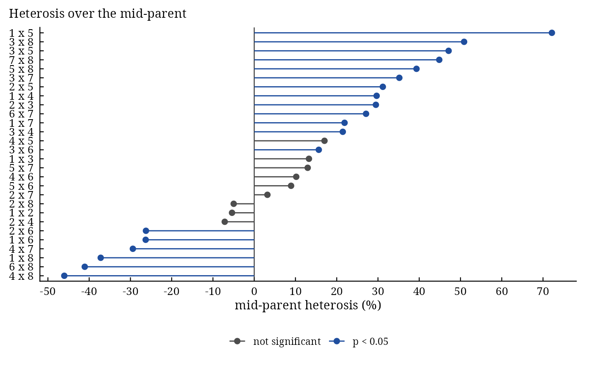

Heterosis over the mid-parent, the better parent and a standard variety
Source:R/Heterosis.R
Heterosis.RdHeterosis() estimates, for every cross of a diallel or a set of crosses grown with their parents in a
randomized complete block experiment, the heterosis over the mid-parent, over the better parent and over a standard
(check) variety, in percent, with \(t\) tests of the underlying differences.
Usage
Heterosis(
y,
Rep,
Cross1,
Cross2,
data,
Check = NULL,
Better = c("higher", "lower")
)Arguments
- y
response: a column of
datagiven by name (y = Yieldory = "Yield") or a numeric vector of lengthnrow(data).- Rep
replicate (block): a column of
dataor a vector, as fory.- Cross1
female parent of each plot: a column of
dataor a vector, as fory.- Cross2
male parent of each plot: a column of
dataor a vector, as fory.- data
a data frame (or
data.table) with one row per plot.- Check
label of the standard (check) variety: a parent of the diallel or another entry of
datagrown as a self (Cross1 == Cross2);NULL(default) for no standard heterosis.- Better
"higher"(default) or"lower": which parent is the better one.
Value
An object of class c("da_heterosis", "da_result", "list"):
Meansmatrix of cross means (parents on the diagonal).
Heterosisdata.table, one row per cross:Cross1,Cross2,F1,MidParent,BetterParent,MP(percent),t_MP,p_MP,BP,t_BP,p_BPand, with a check,Check,SH,t_SH,p_SH.StdErrstandard errors of the differences \(F_{ij} - MP\) and \(F_{ij} - BP\) (also used for the check).
RCBDanalysis of variance of the plot data.
Methods: print(), summary(), plot() (heterosis of every cross, significant ones marked;
which = c("MP", "BP", "SH", "residuals", "qq")), data.table::as.data.table(x, component =),
da_export.
Details
Means. \(F_{ij}\) is the mean of cross \(i \times j\) (crosses recorded both ways round
are kept apart, so reciprocal crosses have their own heterosis), \(P_i\) the mean of parent \(i\) and
\(C\) the mean of the check; the means are least-squares means of the block analysis when plots are missing.
With \(B\) replicates and error mean square \(MS_E\) on \(f_E\) degrees of freedom
(Singh and Chaudhary 2004):
$$MP = \frac{P_i + P_j}{2}, \quad H_{MP} = 100\,\frac{F_{ij} - MP}{MP}, \quad t = \frac{F_{ij} - MP}{
\sqrt{3MS_E/(2B)}},$$
$$BP = \max(P_i, P_j), \quad H_{BP} = 100\,\frac{F_{ij} - BP}{BP}, \quad t = \frac{F_{ij} - BP}{
\sqrt{2MS_E/B}},$$
and the standard heterosis \(H_{C} = 100(F_{ij} - C)/C\) with \(t = (F_{ij} -
C)/\sqrt{2MS_E/B}\). For a trait where lower values are better (days to flowering,
disease score) set Better = "lower": the better parent is then the lower one. The p-values are two-sided
on \(f_E\) degrees of freedom.
References
Fonseca, S. and Patterson, F. L. (1968). Hybrid vigor in a seven-parent diallel cross in common winter wheat (Triticum aestivum L.). Crop Science, 8(1), 85–88. doi:10.2135/cropsci1968.0011183X000800010025x
Singh, R. K. and Chaudhary, B. D. (2004). Biometrical Methods in Quantitative Genetic Analysis. Kalyani Publishers, New Delhi.
See also
Other DiallelAnalysisR analyses:
GardnerEberhart(),
Griffing(),
GriffingEnv(),
GriffingMeans(),
Hayman(),
LineTester(),
NCDesign(),
PartialDiallel()
Author
Muhammad Yaseen (myaseen208@gmail.com)
Examples
#-------------------------------------------------------------
## Parents and one set of crosses; parent 3 as the check
#-------------------------------------------------------------
het <-
Heterosis(
y = Yield
, Rep = Rep
, Cross1 = Cross1
, Cross2 = Cross2
, data = GriffingData2
, Check = 3
, Better = c("higher", "lower")[1]
)
het
#> Heterosis of 28 crosses; check 3
#>
#> Cross1 Cross2 F1 MidParent BetterParent MP t_MP p_MP
#> <char> <char> <num> <num> <num> <num> <num> <num>
#> 1: 1 2 87.01 91.95 98.26 -5.375 -0.7637 4.468e-01
#> 2: 1 3 90.45 79.86 85.64 13.271 1.6375 1.045e-01
#> 3: 1 4 114.94 88.64 91.64 29.673 4.0643 9.324e-05
#> 4: 1 5 120.29 69.87 85.64 72.153 7.7903 5.025e-12
#> 5: 1 6 68.55 93.02 100.39 -26.304 -3.7807 2.601e-04
#> 6: 1 7 107.64 88.30 90.96 21.902 2.9884 3.492e-03
#> 7: 1 8 52.64 83.82 85.64 -37.201 -4.8183 4.899e-06
#> 8: 2 3 111.58 86.16 98.26 29.490 3.9263 1.545e-04
#> 9: 2 4 88.17 94.95 98.26 -7.141 -1.0476 2.972e-01
#> 10: 2 5 99.93 76.18 98.26 31.174 3.6697 3.836e-04
#> 11: 2 6 73.27 99.32 100.39 -26.237 -4.0268 1.071e-04
#> 12: 2 7 97.64 94.61 98.26 3.203 0.4682 6.406e-01
#> 13: 2 8 85.65 90.13 98.26 -4.971 -0.6922 4.903e-01
#> 14: 3 4 100.65 82.86 91.64 21.471 2.7489 7.041e-03
#> 15: 3 5 94.28 64.09 74.07 47.122 4.6663 9.086e-06
#> 16: 3 6 100.88 87.23 100.39 15.654 2.1100 3.724e-02
#> 17: 3 7 111.54 82.52 90.96 35.175 4.4849 1.870e-05
#> 18: 3 8 117.74 78.03 82.00 50.875 6.1344 1.532e-08
#> 19: 4 5 85.28 72.87 91.64 17.035 1.9182 5.781e-02
#> 20: 4 6 105.80 96.02 100.39 10.186 1.5112 1.337e-01
#> 21: 4 7 64.45 91.30 91.64 -29.409 -4.1489 6.803e-05
#> 22: 4 8 46.85 86.82 91.64 -46.032 -6.1754 1.267e-08
#> 23: 5 6 84.15 77.25 100.39 8.937 1.0668 2.885e-01
#> 24: 5 7 81.93 72.53 90.96 12.965 1.4531 1.492e-01
#> 25: 5 8 94.82 68.05 82.00 39.336 4.1363 7.131e-05
#> 26: 6 7 121.61 95.68 100.39 27.107 4.0075 1.149e-04
#> 27: 6 8 53.74 91.20 100.39 -41.071 -5.7875 7.476e-08
#> 28: 7 8 125.27 86.48 90.96 44.854 5.9938 2.927e-08
#> Cross1 Cross2 F1 MidParent BetterParent MP t_MP p_MP
#> <char> <char> <num> <num> <num> <num> <num> <num>
#> BP t_BP p_BP Check SH t_SH p_SH
#> <num> <num> <num> <num> <num> <num> <num>
#> 1: -11.4492 -1.50545 1.352e-01 74.07 17.470 1.7316 8.628e-02
#> 2: 5.6162 0.64366 5.212e-01 74.07 22.121 2.1926 3.054e-02
#> 3: 25.4310 3.11863 2.345e-03 74.07 55.184 5.4698 3.074e-07
#> 4: 40.4519 4.63613 1.026e-05 74.07 62.400 6.1851 1.211e-08
#> 5: -31.7163 -4.26077 4.456e-05 74.07 -7.452 -0.7387 4.618e-01
#> 6: 18.3405 2.23242 2.771e-02 74.07 45.325 4.4926 1.814e-05
#> 7: -38.5370 -4.41666 2.443e-05 74.07 -28.932 -2.8677 4.998e-03
#> 8: 13.5508 1.78179 7.767e-02 74.07 50.635 5.0188 2.132e-06
#> 9: -10.2687 -1.35022 1.798e-01 74.07 19.036 1.8868 6.194e-02
#> 10: 1.6996 0.22348 8.236e-01 74.07 34.913 3.4605 7.806e-04
#> 11: -27.0196 -3.62981 4.401e-04 74.07 -1.087 -0.1077 9.144e-01
#> 12: -0.6310 -0.08297 9.340e-01 74.07 31.821 3.1541 2.100e-03
#> 13: -12.8333 -1.68745 9.449e-02 74.07 15.634 1.5496 1.242e-01
#> 14: 9.8265 1.20503 2.309e-01 74.07 35.878 3.5562 5.659e-04
#> 15: 27.2918 2.70513 7.968e-03 74.07 27.292 2.7051 7.968e-03
#> 16: 0.4931 0.06624 9.473e-01 74.07 36.202 3.5883 5.073e-04
#> 17: 22.6253 2.75398 6.940e-03 74.07 50.587 5.0142 2.174e-06
#> 18: 43.5793 4.78199 5.684e-06 74.07 58.951 5.8432 5.814e-08
#> 19: -6.9347 -0.85041 3.970e-01 74.07 15.141 1.5008 1.364e-01
#> 20: 5.3840 0.72329 4.711e-01 74.07 42.831 4.2454 4.725e-05
#> 21: -29.6704 -3.63851 4.271e-04 74.07 -12.988 -1.2873 2.008e-01
#> 22: -48.8706 -5.99304 2.937e-08 74.07 -36.742 -3.6419 4.222e-04
#> 23: -16.1769 -2.17321 3.201e-02 74.07 13.609 1.3489 1.803e-01
#> 24: -9.9219 -1.20771 2.299e-01 74.07 10.618 1.0525 2.950e-01
#> 25: 15.6341 1.71555 8.919e-02 74.07 28.014 2.7767 6.504e-03
#> 26: 21.1376 2.83962 5.425e-03 74.07 64.183 6.3617 5.306e-09
#> 27: -46.4688 -6.24261 9.266e-09 74.07 -27.447 -2.7205 7.630e-03
#> 28: 37.7199 4.59130 1.227e-05 74.07 69.124 6.8515 5.140e-10
#> BP t_BP p_BP Check SH t_SH p_SH
#> <num> <num> <num> <num> <num> <num> <num>
#>
#> Standard errors of the differences: F1 - MP 6.472, F1 - BP 7.473
head(het$Heterosis)
#> Cross1 Cross2 F1 MidParent BetterParent MP t_MP
#> <char> <char> <num> <num> <num> <num> <num>
#> 1: 1 2 87.0100 91.95250 98.260 -5.375058 -0.763714
#> 2: 1 3 90.4550 79.85750 85.645 13.270513 1.637523
#> 3: 1 4 114.9450 88.64250 91.640 29.672561 4.064257
#> 4: 1 5 120.2900 69.87375 85.645 72.153348 7.790308
#> 5: 1 6 68.5500 93.01750 100.390 -26.304190 -3.780713
#> 6: 1 7 107.6425 88.30250 90.960 21.901985 2.988413
#> p_MP BP t_BP p_BP Check SH t_SH
#> <num> <num> <num> <num> <num> <num> <num>
#> 1: 4.467504e-01 -11.449216 -1.5054531 1.352100e-01 74.07 17.46996 1.7316057
#> 2: 1.045147e-01 5.616206 0.6436649 5.211962e-01 74.07 22.12097 2.1926089
#> 3: 9.323985e-05 25.431034 3.1186298 2.345241e-03 74.07 55.18429 5.4698131
#> 4: 5.025436e-12 40.451865 4.6361266 1.025726e-05 74.07 62.40043 6.1850706
#> 5: 2.600742e-04 -31.716306 -4.2607669 4.456033e-05 74.07 -7.45241 -0.7386757
#> 6: 3.492189e-03 18.340479 2.2324197 2.771035e-02 74.07 45.32537 4.4926067
#> p_SH
#> <num>
#> 1: 8.628077e-02
#> 2: 3.054284e-02
#> 3: 3.074332e-07
#> 4: 1.211061e-08
#> 5: 4.617519e-01
#> 6: 1.814482e-05
plot(x = het, which = c("MP", "BP", "SH", "residuals", "qq")[1])
